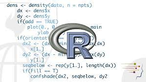
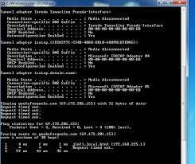
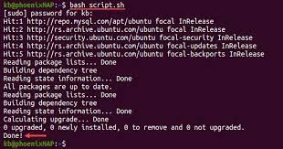
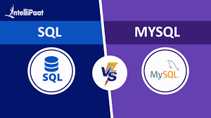
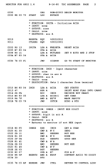

Java Script
Programming Language of the Web
Javascript Page
Programming Language of the Web
Java is a class-based, object-oriented programming language
C++ is an object-oriented programming language which gives a clear structure to programs and allows code to be reused, lowering development costs. C++ is portable and can be used to develop applications that can be adapted to multiple platforms.
An object-oriented programming language from Microsoft that enables developers to build applications othat run on the .Net platform
R is a programming language for statistical computing and graphics supported by the Core Team and the R Foundation for Statistical Computing
 R PageThe C programming language is a procedural and general-purpose language that provides low-level access to system memory.
Python is an interpreted, object-oriented, high-levle programming languge with dynamic semantics.
A batch script is a text file that contains certain commands that are executed in sequence. It is used to simplify certain repetitive tasks or routines in the Windows, DOS and OS/2 operating systems, and is also used in complex network and system administration.
 Batch PageBash scripting allows a user to elegantly sequence commands together, as well as review commands to avoid potential havoc on data, files, and file structures. Style conventions in your scripts help the debugging process and enable fellow programmers to more easily read the code.
 Bash PageStructured Query Language (SQL) is a standardized programming language that is used to manage relational databases and perform various operations on the data in them.
 SQL PageAn assembly language is a type of low-level programming language that is intended to communicate directly with a computer's hardware. Unlike machine language, which consists of binary and hexadecimal characters, assembly languages are designed to be readable by humans.
 Assembly Page